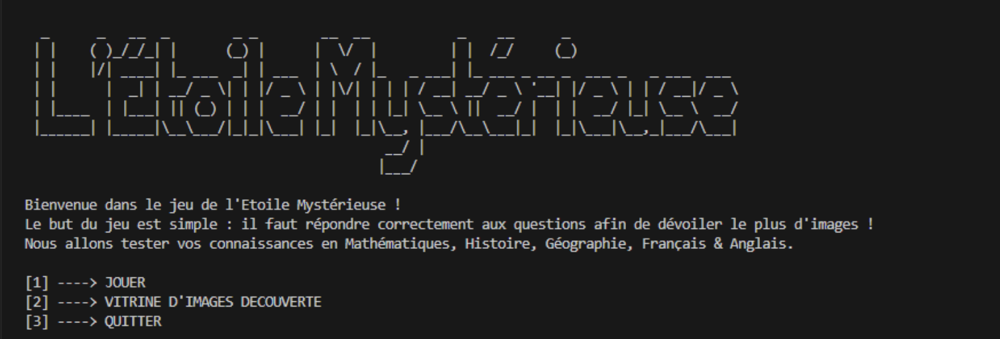
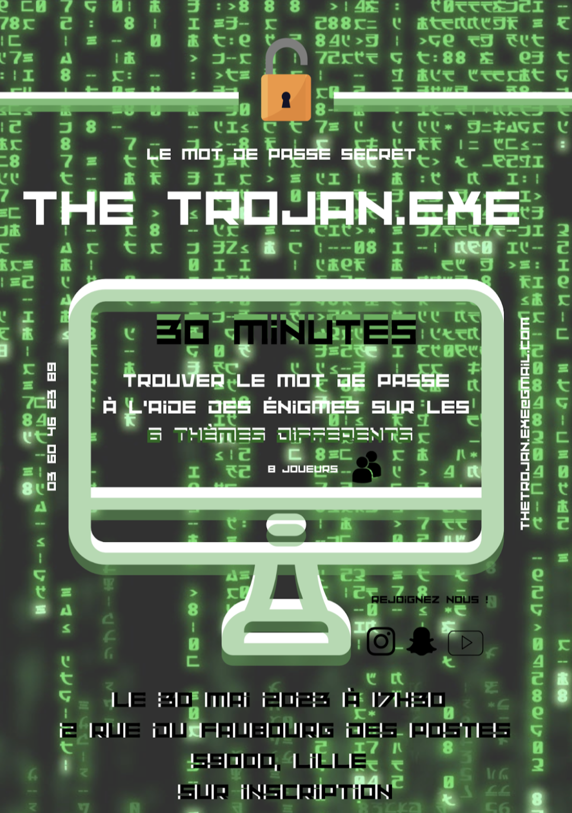

Comparaison d’approches algorithmiques - Conception de Logiciels Ludo-pédagogiques

Les objectifs de ce projets universitaire étaient d’apprendre à analyser un problème avec méthode (découpage en éléments algorithmiques simples, structures de données…), de faire des essais et évaluer leurs résultats en regard des spécifications et répondre à une demande client.
Le projet était de créer un logiciel ludo-pédagogique en iJava (langage informatique mis au point par Yann Secq au sein de l’Université de Lille) destiné à des enfants de primaire.
iJava est le langage de programmation utilisé pour l'apprentissage de la programmation en BUT Informatique de l'Université de Lille.
Ce langage est une version simplifiée de Java dans laquelle les aspects objets (étudiés au second semestre) sont masqués pour supporter l'apprentissage d'un langage procédural.
Ce langage a l'avantage d'utiliser exactement la même syntaxe et les mêmes outils de développement que le langage Java, ce qui facilite ensuite la transition vers la programmation orientée objets.
Gestion de projet/travail d'équipe - Conceptiion d'un Escape Game

L’objectif de ce projet universitaire était de créer un escape game en utilisant l’outil Genially. Avec mon groupe nous avons choisis pour thème d’escape game : les bases à avoir pour une rentrée en BUT Informatique.
Ce projet mêlait de la gestion de projet, nous utilisions les outils de gestion dans notre organisation d’équipe pour la création d’un jeu en équipe et la communication visuelle et audiovisuelle en créant une affiche publicitaire pour le jeu ainsi qu’un teaser ayant pour but de donner envie de jouer à de potentiels futurs joueurs.
Le but de ce projet était de nous faire travailler en équipe afin de nous montrer les différentes demandes que cela engendre (réunions avec compte-rendu, utilisation de méthodes de travail plus efficaces…).
Et bien plus encore...
Pour voir mes autres projets, en cours ou terminé, n'hésitez pas à aller faire un tour sur GitLab :
Plus de projets